Basic Integrals:
$\int {du} = u + C $
$\int {adu} = au + C $
$\int {{u^n}du} = {{{u^{n + 1}}} \over {n + 1}} + C \ \ \ \ \ \ \ \ (n \ne - 1)$
$\int {{{du} \over u}} = \ln u + C $
Exponential & Logarithmic Functions:
$\int {{e^u}du} = {e^u} + C $
$\int {{a^u}du }= {{{a^u}} \over {\ln a}} + C $
$\int {u{e^u}du} = {e^u}(u - 1) + C $
$\int {\ln udu} = u\ln u - u + C $
$\int {{{du} \over {u\ln u}}} = \ln |\ln u| + C $
Trigonometric Functions:
$\int {\sin udu} = - \cos u + C $
$\int {\cos udu} = \sin u + C $
$\int {\tan udu} = \ln |\sec u| + C $
$\int {\cot udu} = \ln |\sin u| + C $
$\int {\sec udu} = \ln |\sec u + \tan u| + C$
$\int {\csc udu} = \ln |\csc u - \cot u| + C$
$\int {{{\sec }^2}udu} = \tan u + C$
$\int {{{\csc }^2}udu} = - \cot u + C$
$\int {\sec u\tan udu} = \sec u + C$
$\int {\csc u\cot udu} = - \csc u + C$
$\int {{{\sin }^2}udu} = {1 \over 2}u - {1 \over 4}\sin 2u + C$
$\int {{{\cos }^2}udu} = {1 \over 2}u + {1 \over 4}\sin 2u + C$
$\int {{{\tan }^2}udu = \tan u - u + C} $
$\int {{{\cot }^2}udu} = - \cot u - u + C$
Inverse Trigonometric Functions:
$\int {{{\sin }^{ - 1}}udu} = u{\sin ^{ - 1}}u + \sqrt {1 - {u^2}} + C$
$\int {{{\cos }^{ - 1}}udu} = u{\cos ^{ - 1}}u - \sqrt {1 - {u^2}} + C$
$\int {{{\tan }^{ - 1}}udu} = u{\tan ^{ - 1}}u - \ln \sqrt {1 - {u^2}} + C$
$\int {{{\cot }^{ - 1}}udu} = u{\cot ^{ - 1}}u + \ln \sqrt {1 + {u^2}} + C$
$\int {{{\sec }^{ - 1}}udu} = u{\sec ^{ - 1}}u - \ln |u + \sqrt {{u^2} - 1} | + C$
$\int {{{\csc }^{ - 1}}udu} = u{\csc ^{ - 1}}u + \ln |u + \sqrt {{u^2} - 1} | + C$
Hyperbolic Functions:
$\int {\sinh udu} = \cosh u + C$
$\int {\cosh udu} = \sinh u + C$
$\int {\tanh udu} = \ln |\cosh u| + C$
$\int {\coth udu} = \ln |\sinh u| + C$
$\int {{\mathop{\rm sech}\nolimits} udu} = {\tan ^{ - 1}}(\sinh u) + C$
$\int {{\mathop{\rm csch}\nolimits} udu} = \ln \left| {\tanh {u \over 2}} \right| + C$
$\int {{{{\mathop{\rm sech}\nolimits} }^2}udu} = \tanh u + C$
$\int {{{{\mathop{\rm csch}\nolimits} }^2}udu} = - \coth u + C$
$\int {{\mathop{\rm sech}\nolimits} u\tanh udu} = - {\mathop{\rm sech}\nolimits} u + C$
$\int {{\mathop{\rm csch}\nolimits} u\coth udu} = - {\mathop{\rm csch}\nolimits} u + C$
$\int {{{\sinh }^2}udu} = {1 \over 4}\sinh 2u - {1 \over 2}u + C$
$\int {{{\cosh }^2}udu} = {1 \over 4}\sinh 2u + {1 \over 2}u + C$
$\int {{{\tanh }^2}udu} = u - \tanh u + C$
$\int {{{\coth }^2}udu} = u - \coth u + C$
Trigonometric Substitution:
$\int {\sqrt {{a^2} - {u^2}} du} \ \ \ \ \ $ let: $u = a\sin \theta $
$\int {\sqrt {{a^2} + {u^2}} du} \ \ \ \ \ $ let: $u = a\tan \theta $
$\int {\sqrt {{u^2} - {a^2}} du} \ \ \ \ \ $ let: $u = a\sec \theta $
Integration By Parts:
$$\int {udv} = uv - \int {vdu} $$
Wallis Formula: Formulated by John Wallis.
$$\int\limits_0^{{\pi \over 2}} {{{\sin }^m}\theta {{\cos }^n}\theta d\theta } = {{\left[ {(m - 1)(m - 3) \cdot \cdot \cdot 1 \text{ or } 2} \right]\left[ {(n - 1)(n - 3) \cdot \cdot \cdot 1 \text{ or } 2} \right]} \over {(m + n)(m + n - 2)(m + n - 4) \cdot \cdot \cdot 1 \text{ or } 2}}\alpha $$
where:
$\alpha = {\pi \over 2}$ if both m and n are even
$\alpha = 1$ if otherwise
By rectangular coordinates:
Using a vertical differential strip:
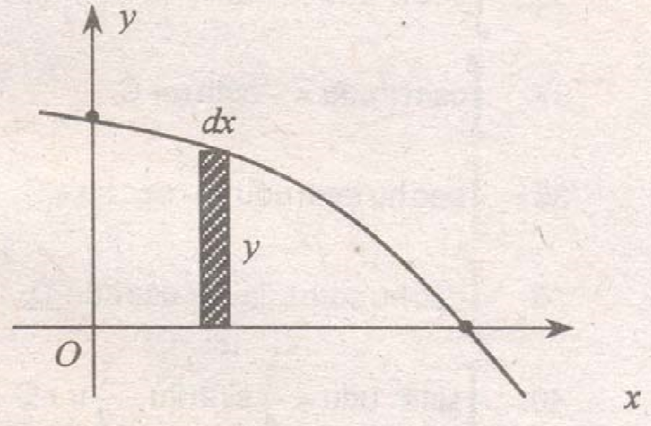
$$A = \int {ydx} $$
Using a horizontal differential strip:
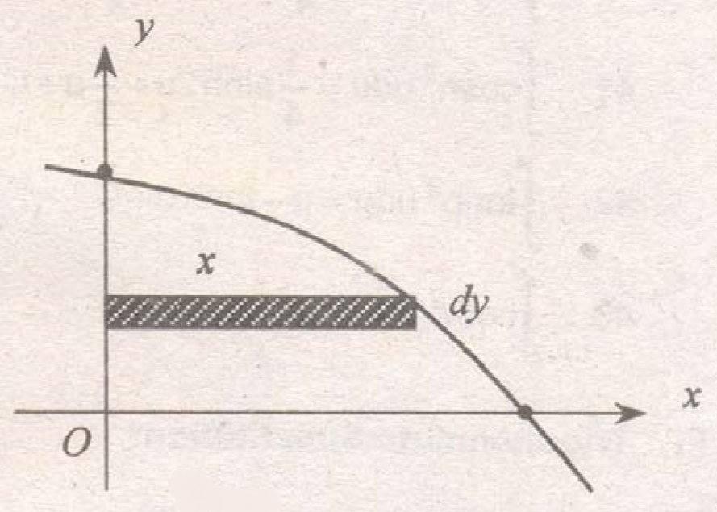
$$A = \int {xdy} $$
By polar coordinates:
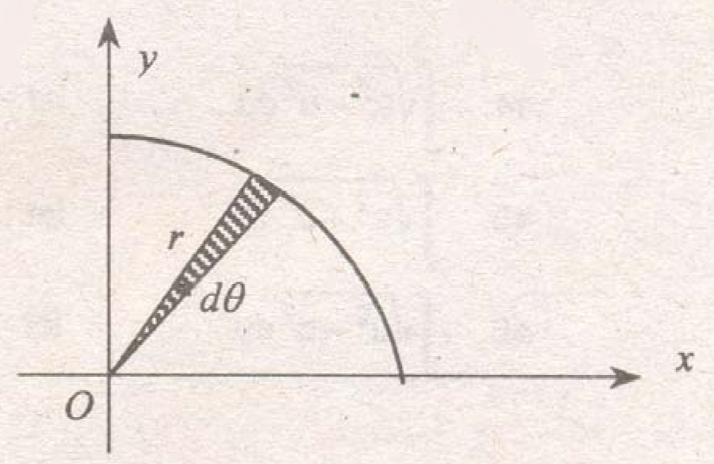
$$A = \int {{{{r^2}} \over 2}d\theta } $$
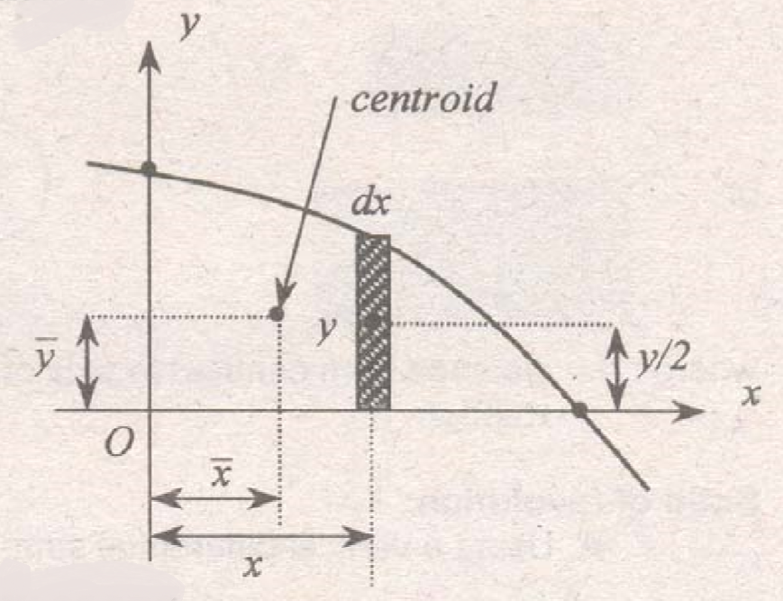
$$\eqalign{
& \bar x = {{\int {dA \cdot x} } \over A} \cr
& \bar y = {{\int {dA \cdot {y \over 2}} } \over A} \cr} $$
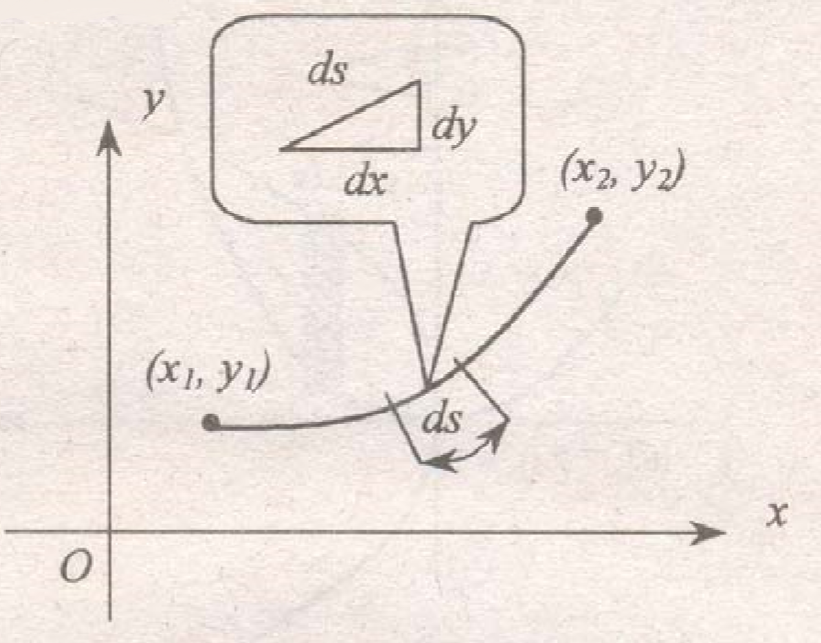
$$\eqalign{
& S = \int\limits_{{x_1}}^{{x_2}} {\sqrt {1 + {{\left( {{{dy} \over {dx}}} \right)}^2}} dx} \cr
& S = \int\limits_{{y_1}}^{{y_2}} {\sqrt {1 + {{\left( {{{dx} \over {dy}}} \right)}^2}} dy} \cr} $$
The following are the propositions or theorems of Pappus (A.D. c. 400) of Alexandria.
First Proposition of Pappus: (Surface Area)
"If an arc is rotated about an axis, it will generate a surface area equal to the product of the length of the arc and the circumference described the its centroid."
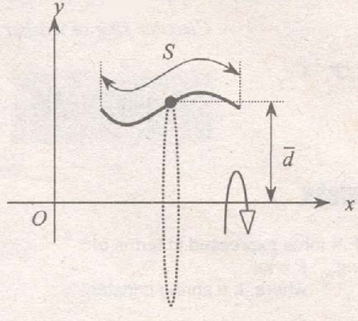
$$A = S \cdot 2\pi \bar d$$
where:
S = length of arc
$\bar d$ = distance from centroid to the axis of rotation
$$A = \int {\sqrt {1 + {{\left( {{{dy} \over {dx}}} \right)}^2}} dx} \cdot 2\pi \bar d$$
Second Proposition of Pappus: (Volume)
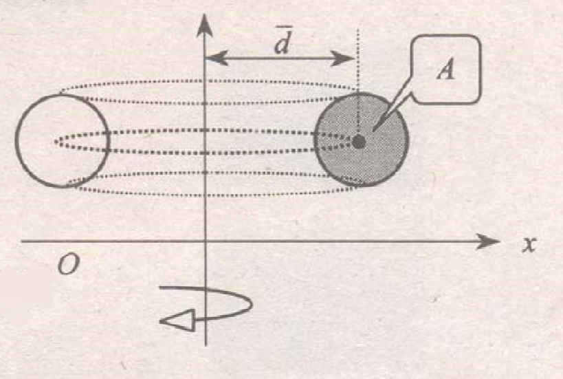
$$V = A \cdot 2\pi \bar d$$
or
$$V = \int {dA} \cdot 2\pi \bar d$$
Solid of revolution:
Using a vertical diferential strip:
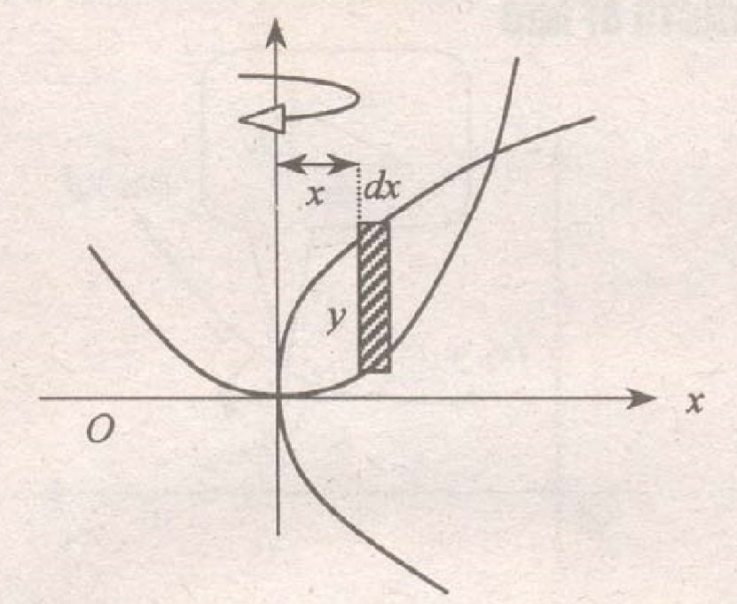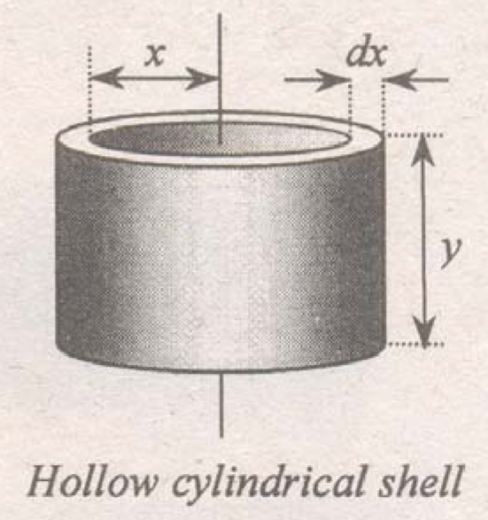
$$V = \int {2\pi yxdx} $$
Using a horizontal differential strip:
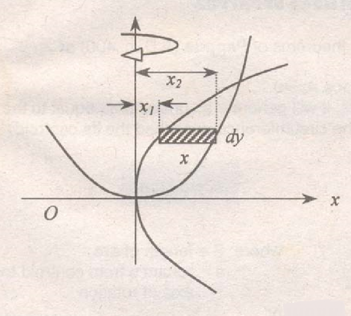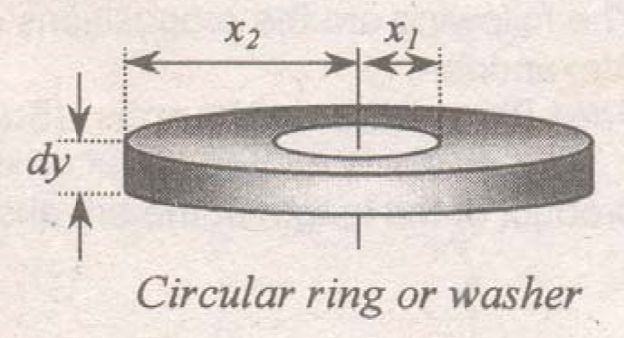
$$V = \int {\pi \left( {{x_2}^2 - {x_1}^2} \right)dy} $$
$$Work = \int {F \cdot dx} $$
where: F = force expressed in terms of x
For spring: F = kx where: k = spring constant
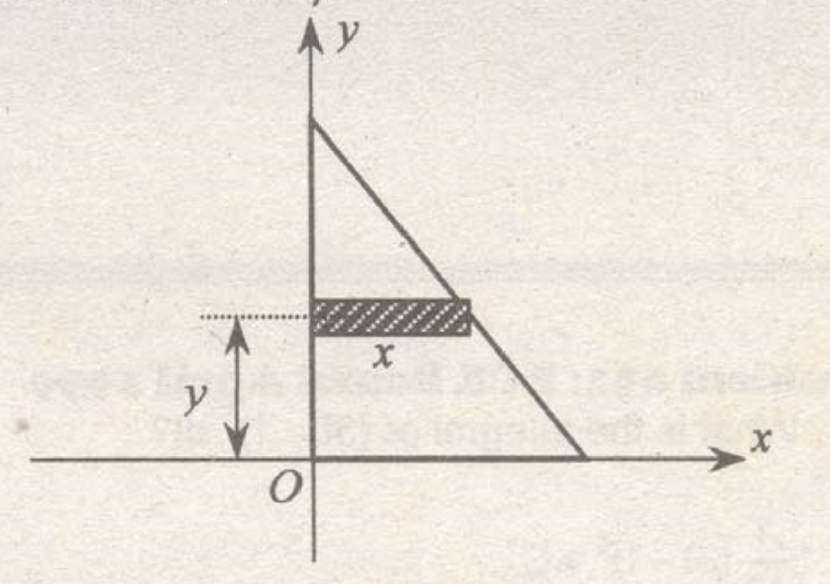
$$\eqalign{
& {I_x} = \int {dA} \cdot {y^2} \cr
& {I_y} = \int {dA} \cdot {\left( {{x \over 2}} \right)^2} \cr} $$
The total hydrostatic pressure may be calculated directly by a formula rather than by integration.
$$P = \gamma \bar hA$$
where:
$\gamma$ = density of the liquid
$\bar h$ = distance from the centroid of the area to the liquid surface.
A = area subjected to pressure
Density of water = 1000 kg/m3
= 9.81 kN/m3
= 9810 N/m3
= 62.4 lbs/ft3
= 1 gram/cc
Density of other liquids = (density of H2O)(sp. gr. of liquid)